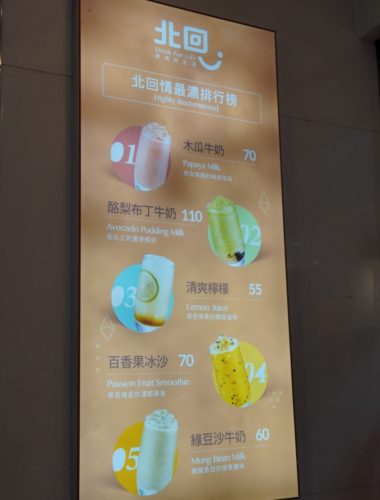
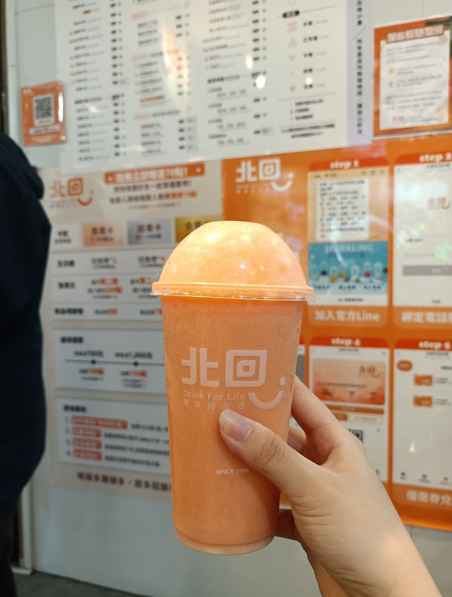

北回木瓜牛奶
地址: 台中市西屯區文華路9之10號
營業時間: 每天11:00-23:30


北回真的是台中超老牌的木瓜牛奶連鎖店，現在手搖飲競爭激烈，品牌也推陳出新，但北回還是有它一定的水準，能夠在逢甲多年屹立不搖，是有它的實力跟道理的！
小編在逢甲當地打滾多年，這間店一直都是這裡的地標之一，陪伴我度過了各種大大小小的冬夏。
招牌木瓜牛奶香濃又不會過甜，怎麼喝都不會膩。
店員調製木瓜牛奶時都會透過磅秤秤量克重，也會因應季節根據水果的甜度進行調整。
Google 評論下方老闆也很用心的回覆每一則留言並做出相應的改進，這大概也是北回木瓜牛奶能夠在逢甲佇立多年的秘訣吧！
| 此標誌為店家位置 |